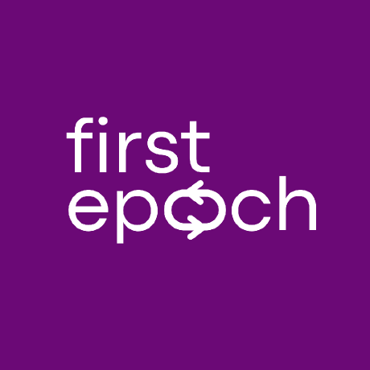

We believe AI is a rare field of scientific inquiry — remarkably open to anyone with the resources, yet scarce in mentorship. This is a practical orientation for getting started in AI research. Start below.